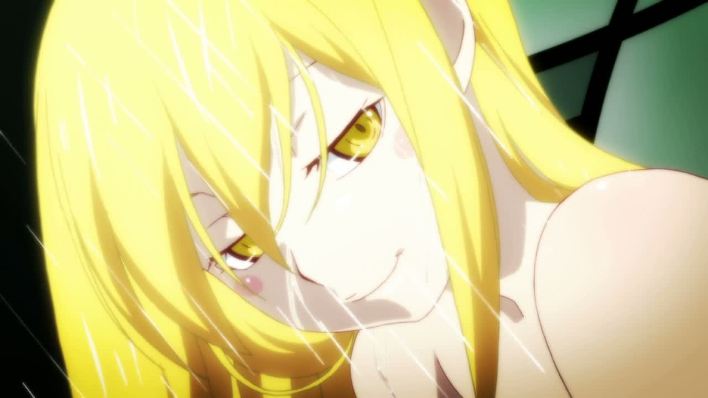

Shinobu Oshino (? ? ? Oshino Shinobu) es una bella y misteriosa chica que actúa como compañera constante de Meme Oshino en las ruinas de la escuela Cram Eikou. Ella era conocida anteriormente como la poderosa vampiro de 500 años de edad, llamada Kiss-shot Acerola-Orion Heart-Under-Blade (?? ???? · ???? ???? · ??? ???? ????), pero ahora está en la forma de una niña de ocho años de edad, después de haber perdido sus poderes. Ella se refiere a sí misma utilizando "washi" (??).
Shinobu es una mujer hermosa con ojos amarillos y el pelo largo y rubio, cuyos extremos se rizan hacia fuera en la puntas. Durante el transcurso de la serie, ella tomó varios cambios en su apariencia mientras recupera poco a poco sus poderes de vampiro. En Bakemonogatari y Nisemonogatari, asumió una forma más joven y lleva un vestido suelto y un par de sandalias, con un gorro de aviador como accesorio (en Bakemonogatari).
Al final de Nisemonogatari, ella aparece como una niña en sus años de adolescencia, atando su cabello en una cola de caballo y vistiendo una camiseta negro dentro de una chaqueta de color morado, una falda negra y medias de color negro.
imagenes  shinobu